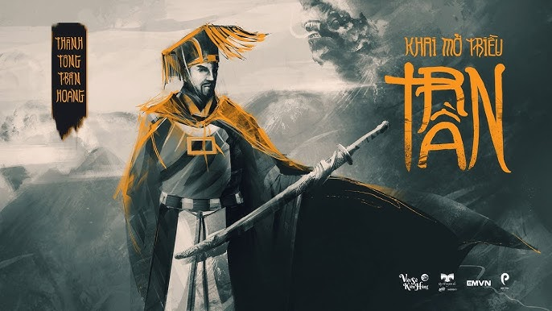
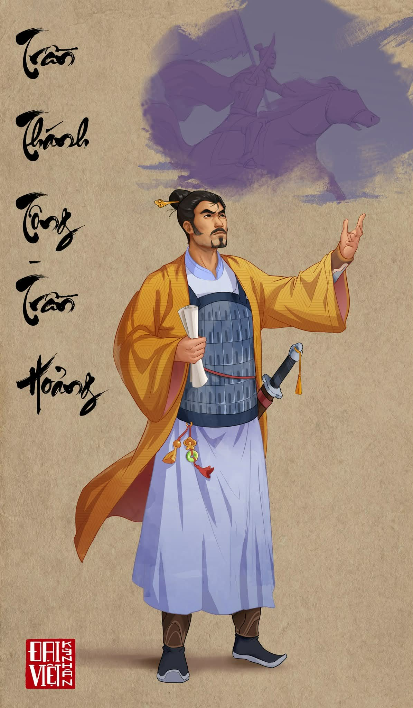

TRẦN THÁNH TÔNG (1240–1290)
Vị vị vua trải qua cả ba cuộc kháng chiến chống quân Mông - Nguyên
 Trần Thánh Tông (1240 – 1290), là vị Hoàng đế thứ hai của nhà Trần nước Đại Việt. Ông được đánh giá là một vị vua anh minh, khoan hòa nhưng quyết đoán, có công củng cố và phát triển đất nước thời Trần.
I. Thân thế và thời gian trị vì
- Trần Thánh Tông tên húy Trần Hoảng, là đích trưởng tử của Trần Thái Tông và Thuận Thiên Hoàng Hậu.
- Ông lên ngôi năm 1258 sau khi cuộc kháng chiến chống Mông Cổ thắng lợi.
- Trong thời gian trị vì (1258–1278), ông điều hành đất nước ổn định, phát triển kinh tế và củng cố quốc phòng.
- Năm 1278, ông truyền ngôi cho con là Trần Nhân Tông và lui về làm Thái thượng hoàng, tiếp tục cùng triều đình bàn việc nước.
II. Thân thế và thời gian trị vì
- Dưới thời Trần Thánh Tông, nhà Trần tiếp tục thực hiện chính sách “ngụ binh ư nông” – cho quân lính luân phiên sản xuất và luyện tập, giúp đất nước vừa phát triển kinh tế vừa củng cố quốc phòng.
- Ông coi trọng nhân tài, xây dựng bộ máy quan lại vững mạnh, chăm lo giáo dục và phát triển văn hóa.
III. Vai trò trong lịch sử chống ngoại xâm
- Cùng triều đình lãnh đạo đất nước sau cuộc kháng chiến chống Mông Cổ (1258).
- Củng cố quân đội và thế trận quốc gia, chuẩn bị lực lượng lâu dài.
- Với vai trò Thái thượng hoàng, phối hợp cùng Trần Nhân Tông chỉ đạo đất nước trước nguy cơ xâm lược.
- Góp phần quan trọng tạo nền tảng cho những chiến thắng vẻ vang của nhà Trần.
IV. Ý nghĩa lịch sử
- Khẳng định vai trò của mộtvị vua anh minh trong việc giữ vững ổn định và phát triển đất nước.
- Đặt nền móng vững chắc cho thời kỳ hưng thịnh của triều Trần.
- Góp phần chuẩn bị lực lượng cho các cuộc kháng chiến chống Nguyên – Mông thắng lợi.
- Để lại bài học về tinh thần đoàn kết dân tộc và tầm nhìn chiến lược của Trần Thánh Tông.